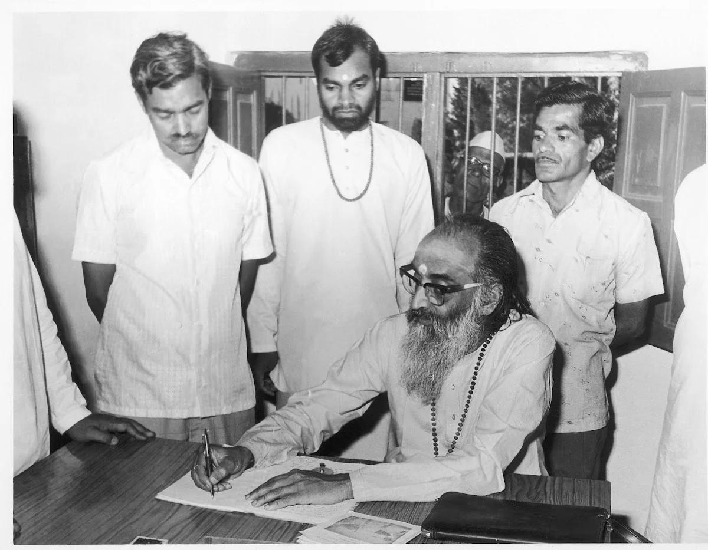
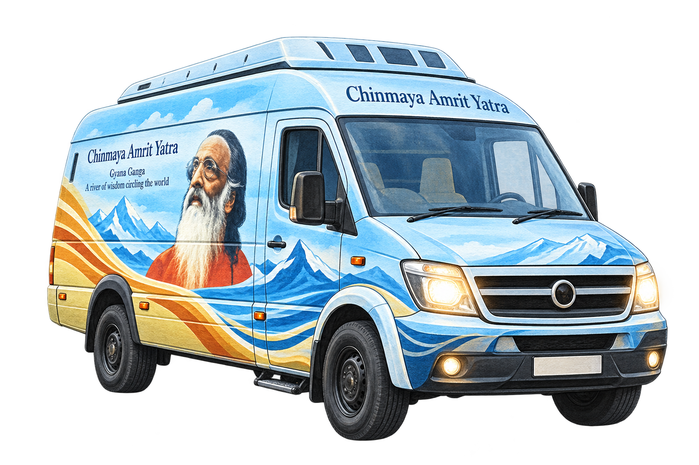
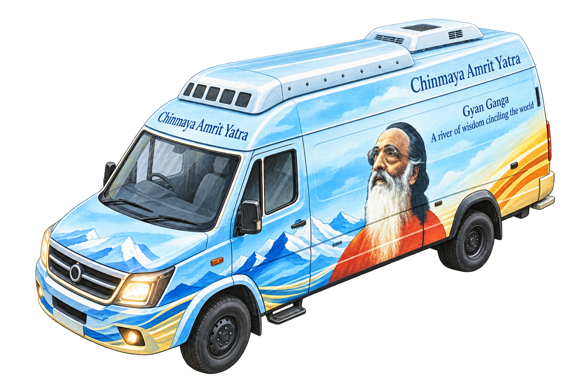
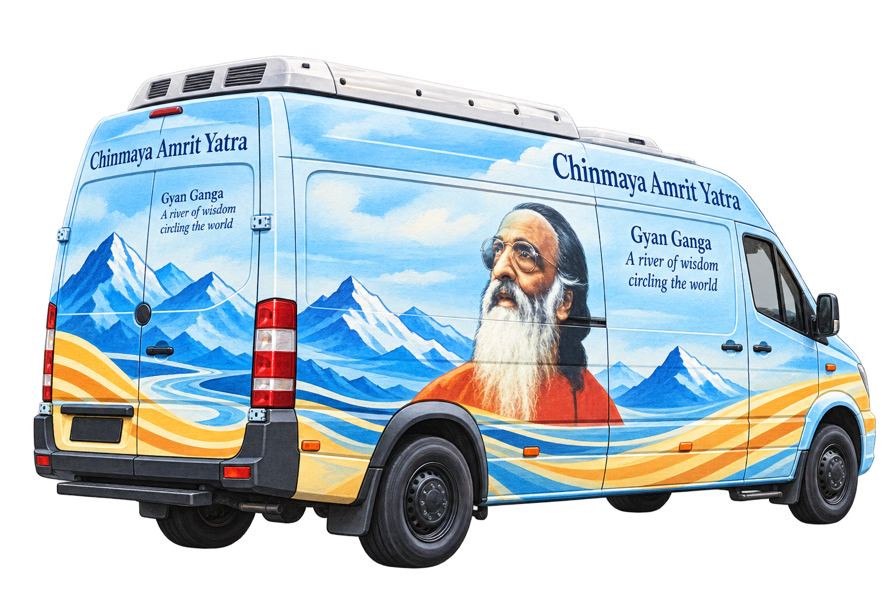
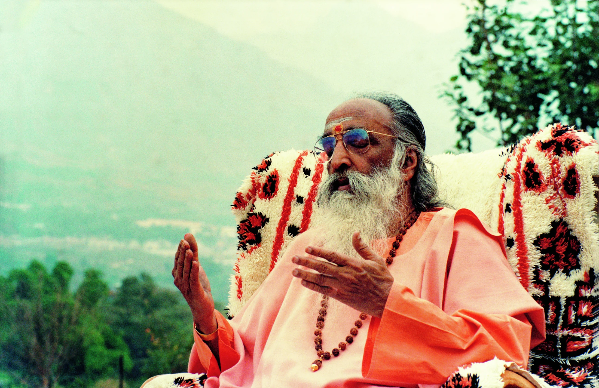
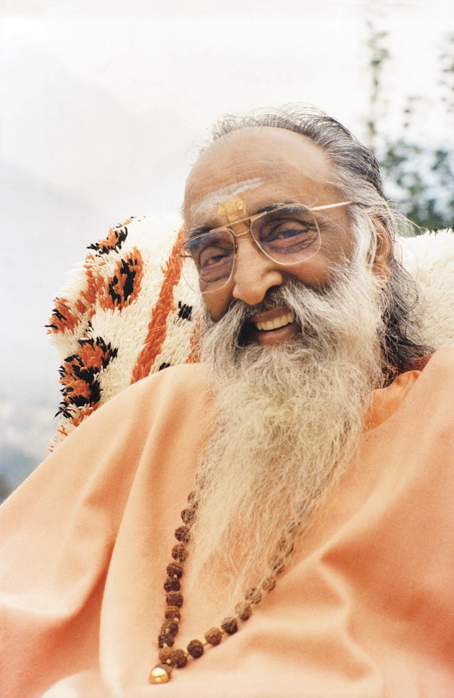
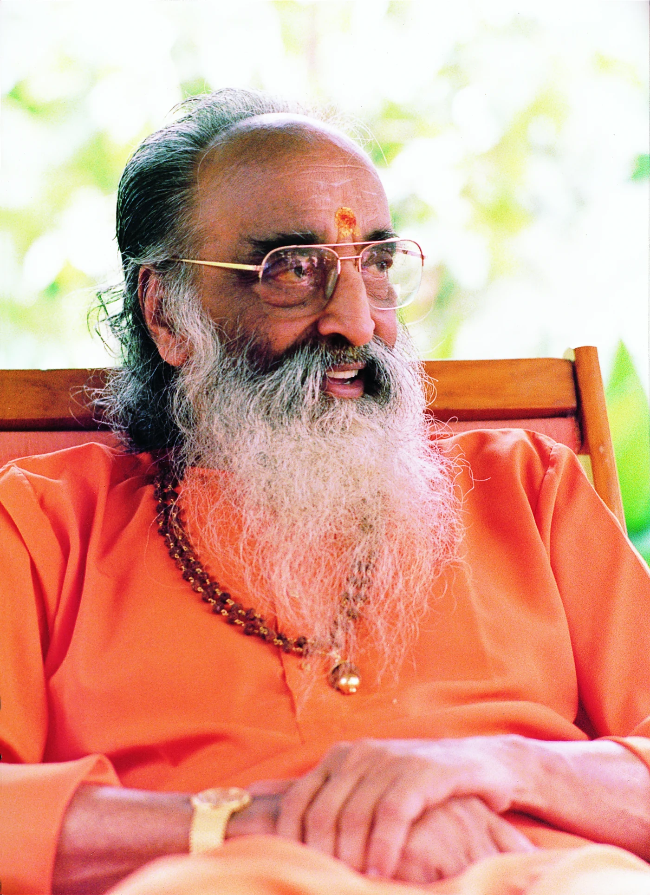
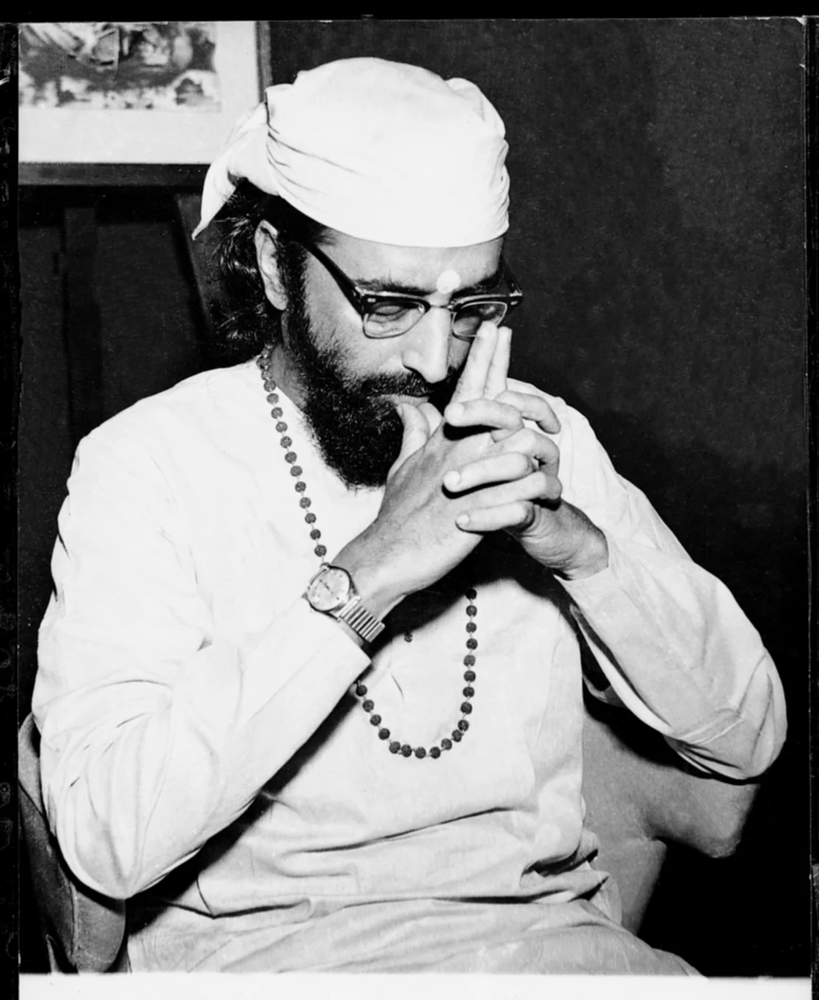

{kind=link}
Body
Education expresses first in the body. Discipline, fitness, and poise lay the foundation of development, rather than being its footnotes.
Balakrishna Menon’s search for truth
became Swami Chinmayananda’s mission
to share it with the world.
SWAMI CHINMAYANANDA
VISIONARY • TEACHER • FOUNDERA LIFE TRANSFORMED.
A VISION THAT CONTINUES.

1916 — 1993
Education must not merely inform.
It must transform.
Chinmaya International
Residential School
Siruvani · Coimbatore
He was born Balakrishna Menon in Ernakulam in 1916, read at St. Thomas College in Thrissur and took his M.A. at Lucknow, where he also began law. He trained as a journalist under K. Rama Rao at the National Herald, worked in the freedom movement, and was arrested and jailed for it.
What followed was not a career but a reversal. He went to Swami Sivananda’s ashram at Rishikesh in September 1947, and the visit turned his life over. On Sivaratri in 1949 he received sannyasa from Swami Sivananda and the name Swami Chinmayananda, and was sent on to Uttarkashi for deeper scriptural study under Swami Tapovan Maharaj.
He might have remained there. The decision that shaped everything after it — including this school — was to come back down and teach Vedanta in English, in public, to people who had never been told it was theirs to study.

From the school’s archive. View Gurudev in the Himalayan setting.
8 May, Balakrishna Menon is born to Parukutty and Kuttan Menon in Ernakulam.

From Vivekodayam High School to Lucknow University, Balan collects an FA (Fellow of Arts), a BA (Bachelor of Arts) and nearly an MA (Master of Arts), before leaving to join the freedom struggle.

Balan begins to write and distribute leaflets for the freedom movement: a warrant is issued for his arrest, until his capture in 1944.

Begins to work at National Herald, writing articles in support of the Freedom Movement.

Balan arrives at Rishikesh for an expose of Himalayan monks. He enters as a skeptic, stays as a student, and leaves as a seeker. Swami Sivananda grants him sannyasa diksha and the name Swami Chinmayananda, and points him toward Tapovanji Maharaj for the study of the Upanishads.

Swami Chinmayananda descends to the plains with the mission of bringing Vedanta to the masses. His first lecture series commences in Pune in December.

The first Jnana Yajna sparked a growing circle of study groups and volunteers. In 1953, that shared work took the name Chinmaya Mission — an organised movement created to carry Vedanta into everyday life.


Rs. 10,000 is collected to build the Vivekananda Rock Memorial.
Establishment of Sandeepany Sadhanalaya.

Gurudev joins forces with RSS Pracharak Apte to form Vishva Hindu Parishad.

Adi Sankara’s birth home is reborn as Chinmaya International Foundation.

3 August, Swami Chinmayananda attains Mahasamadhi.


A Vedanta teacher, holding a flask up to the light. From the school’s archive.
Information can be handed over. A person cannot. The claim underneath every Chinmaya school is that education is only finished when the student has changed, and that this asks for the whole of them at once.
He saw no quarrel between the laboratory and the Upanishad. Both begin by holding a thing up to the light and asking what it actually is.







His concern was not that India lacked schools. It was that a young person could pass through one, do well, and emerge with no working relationship to the civilisation they had been born into — competent, and unmoored.
What he argued for was an education that took character as seriously as it took examinations: cultural confidence rather than cultural nostalgia, discipline held from the inside, and the plain expectation that what a person knows is owed back to the people among whom they live.


Education expresses first in the body. Discipline, fitness, and poise lay the foundation of development, rather than being its footnotes.
A balanced mind, unperturbed by the storms that try to capsize it, and the mental control to master any situation.
Not the accumulation of answers, but the infusion of questioning as a lifestyle — including questioning what the teacher has just said, which is how Vedanta has always been taught.
Delving into the subtler aspects of personality, and exposing our students to the vast literature and scripture of Bharat.
The idea of an international school in India was his. Sites were weighed in Bangalore, Lucknow, the Andamans and Himachal Pradesh before Coimbatore was chosen, and the hundred acres in the Siruvani foothills were bought one rupee at a time.
In 1984 Swami Sahayanandaji walked the length and breadth of India, collecting a single rupee from each person towards the land. Ten years later Pujya Guruji Swami Tejomayananda took up the vision and carried it into being.
Gurudev did not see it open. He attained mahasamadhi on 3 August 1993. On 6 June 1996 the Chinmaya International Residential School was inaugurated by Pujya Swami Chidanandaji, President of The Divine Life Society, with ninety-six students in Grades V to VIII and eleven academic staff.

A hundred acres in the Siruvani foothills.
CIRS teaches through the Chinmaya Vision Programme, which integrates culture, philosophy and academics. It is not a subject on the timetable. It is the account of what the school is for, and it rests on four aspects.
Direction for students’ mental and physical energies, moulding their every facet toward perfection.
Pride in the civilisation the student inherits, blending knowledge, tradition, philosophy, and the lifestyle of practising with understanding.
The fierce sense of belonging and community, and the willingness to give more to the nation than what they take.
Love for all living beings, seeing all life as worth respecting, and acknowledging the infinite one belongs to.
At CIRS it shows up in the shape of the day rather than in a syllabus: morning assembly, prayer and aarti, yoga, value education, culture talks, service, the houses, the arts and sport, and the ordinary negotiations of living together on one campus.
ज्ञानं सेवा च कौशलम्
Knowledge. Service. Efficiency.
कटिबद्धा वयं सर्वे लक्ष्यं साधयितुं वरम् |
शिक्षायास्त्रिविधं यद्वै ज्ञानं सेवा च कौशलम् ||
Knowledge is gained in order to serve the world efficiently. Learning that never reaches anyone is incomplete; service without skill is a good intention that does not arrive. The school asks for all three, and does not accept one of them as a substitute for the others.

The school states its aim plainly: to develop competent, sensitive and ethical young people, and to unlock the potential of exceptional children until they are conscientious global citizens.
Which is a description of a person, not of a result. Someone who can think hard and be argued with; who has the steadiness to be disappointed without being derailed; who knows where they come from without needing everyone else to come from the same place; and who, given something worth doing, is actually able to do it.
That is the whole of the claim. Everything else on this campus — two curricula, the houses, the field, the stage, the assembly — is the method.

A vision that began with one teacher continues through generations of students. Every child who learns, questions, serves and grows at CIRS is part of what he started — including the ones who will never hear his name until somebody tells them.
Under construction
This page is still being written. Photographs, names and figures marked in brackets are placeholders awaiting the school, and more will be added here in the weeks ahead. Tell us what is missing.